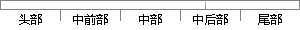

三是使用白名单训练N-gram模型供域名字符特征计算时使用。
片段位置图

相似结果|
1
原句片段：三是使用白名单训练N-gram模型供域名字符特征计算时使用。
相似片段 1：通过分层的Softmax,计算复杂度一下从|K|降低到log|K|。 3 n-gram特征 在...除非你决定使用预训练的embedding来训练fastText分类模型,这另当别论。 1 字符...
|
※ 片段修改建议 ※
近似词参考：- 使用：利用
- 训练：练习
- 模型：模子
- 特征：特点 特性
- 计算：计较 较量争论 盘算
- 使用：利用
系统自动生成语句：三是利用白名单练习N-gram模子供域名字符特点计较时利用。
注：本片段修改建议为系统自动生成，仅供参考。